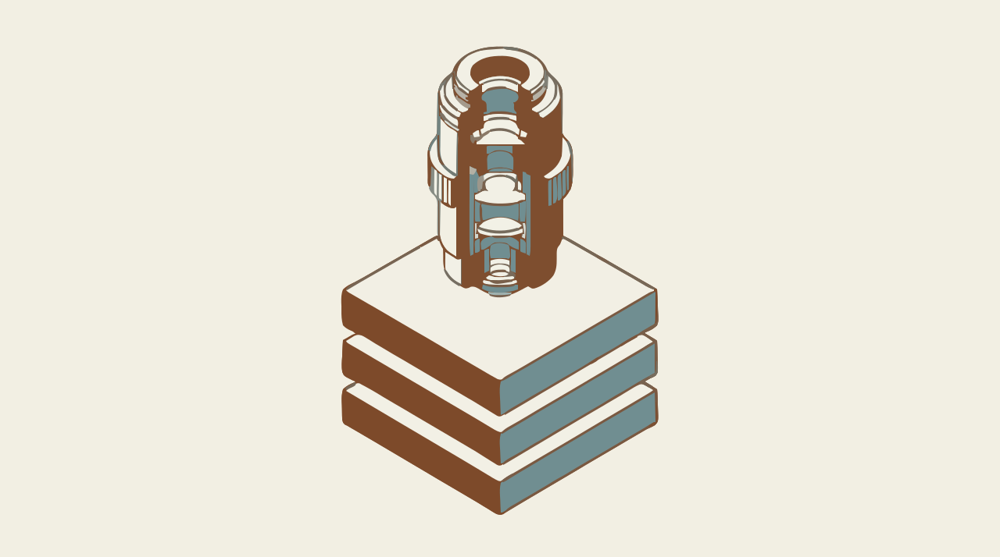

El microscopio · Sesión 8
Inteligencia de Negocios · Dudbil Olvasada Pabón Riaño · UNAB
Columna de hoy: el grosor es el tiempo real de cada bloque

Resultados de aprendizaje 2.1 y 2.2
Diseña dashboards enfocados en la visualización de KPI relevantes.
Aplica principios de diseño visual y usabilidad en reportes ejecutivos.
Agregas filtros y drill-down que respondan preguntas.
Compruebas con otra persona si se entiende.
Aumento 1x: el total por país, fuera del Reino Unido
Venta neta en libras, del 1-dic-2010 al 9-dic-2011. Chen (2015), CC BY 4.0. La propuesta de la oficina es un supuesto del ejercicio.
Haz clic: esto es un drill-down
Mismo tamaño en el total. Otro negocio por dentro.
Los cinco clientes mayores de cada país; el resto, agrupado. Áreas proporcionales.
Microsoft Learn: Add a filter to a report in Power BI. Ejemplo con este caso.
Microsoft Learn: “visualizations on a report page cross-filter and cross-highlight”. Se cambia en Formato > Editar interacciones. Venta neta mensual real.
Nivel: mes
Solo noviembre tiene preparado el nivel de día en esta demostración. Chen (2015), CC BY 4.0.
Microsoft Learn: Use drill mode; Drillthrough in Power BI reports.
“Encuentra qué país depende más de un solo cliente.”
Dónde hace clic, dónde duda, qué concluye. Si pregunta, responde: “¿tú qué harías?”
Varias pruebas pequeñas enseñan más que una grande.
Nielsen (2000): con 5 usuarios parecidos, un modelo estima que se halla cerca del 85 % de los problemas. Hoy serán 1 o 2 compañeros: sirve para ver lo evidente, no para medir.
English immersion · 10 minutes
“By using drill mode, you can answer your own follow-up questions about a chart, such as ‘What's behind that spike?’”
Microsoft Learn, Use drill mode (adapted punctuation)
drill down · drill up · drill through · slicer · to filter · to highlight · hierarchy
Portaobjetos de hoy
Fuentes del laboratorio
Chen, D. (2015). Online Retail [conjunto de datos]. UCI. CC BY 4.0. doi:10.24432/C5BW33
Microsoft Learn. Add a filter to a report in Power BI. learn.microsoft.com
Microsoft Learn. Slicers in Power BI. learn.microsoft.com
Microsoft Learn. Change how visuals interact in a report. learn.microsoft.com
Microsoft Learn. Use drill mode to explore visuals. learn.microsoft.com
Microsoft Learn. Drillthrough in Power BI reports. learn.microsoft.com
Nielsen, J. (2000). Why you only need to test with 5 users. Nielsen Norman Group. nngroup.com
Iconos: Lucide, licencia ISC. Dirección de arte e ilustraciones: generadas con Gemini, vectorizadas y adaptadas; las ilustraciones no contienen datos. Gráficas hechas con los datos reales.